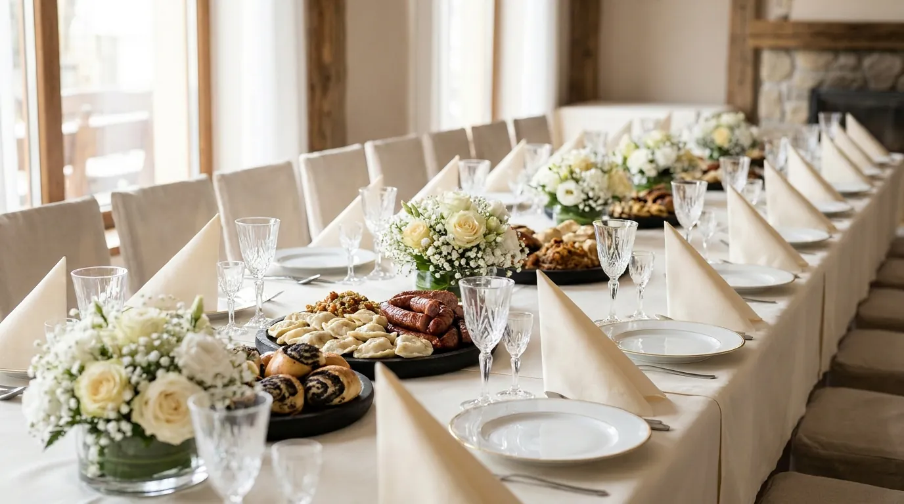
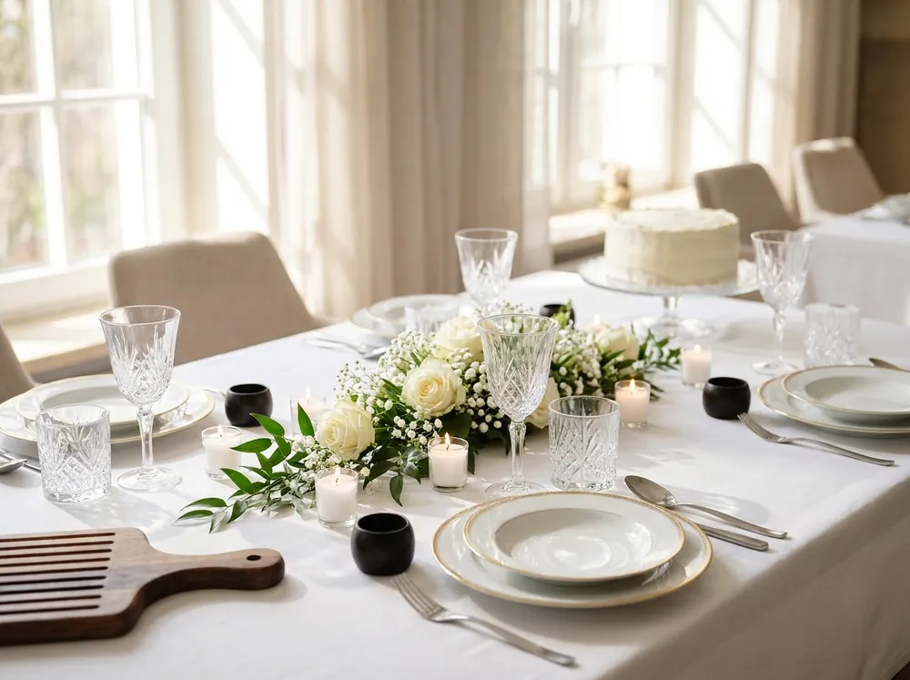
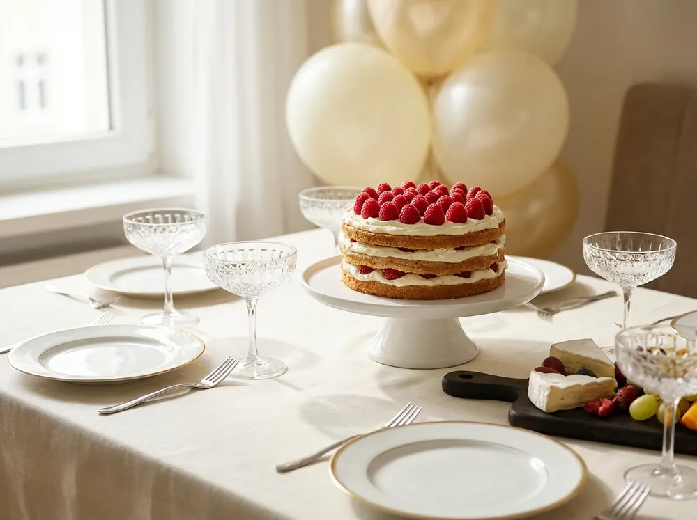
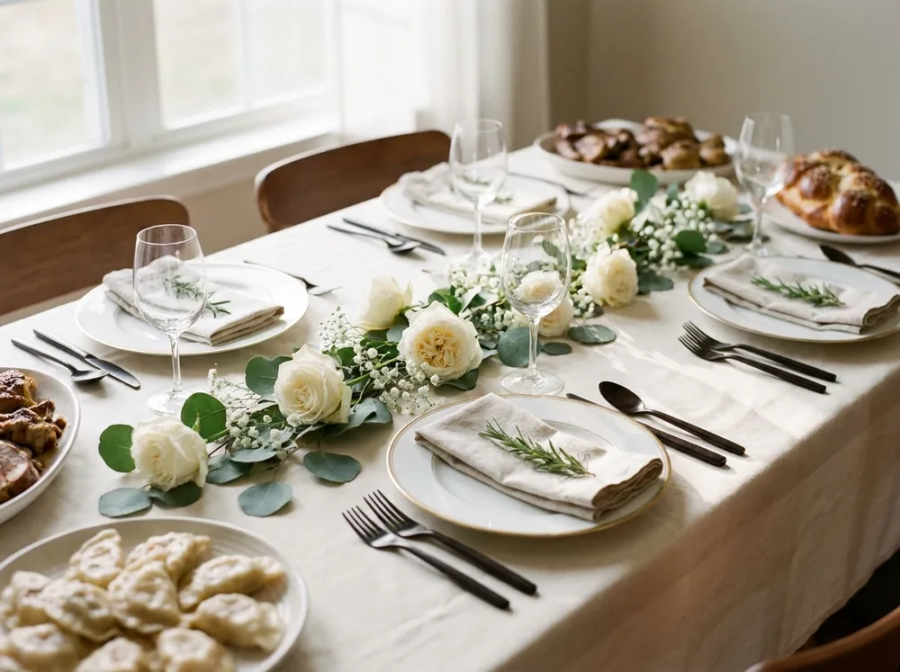
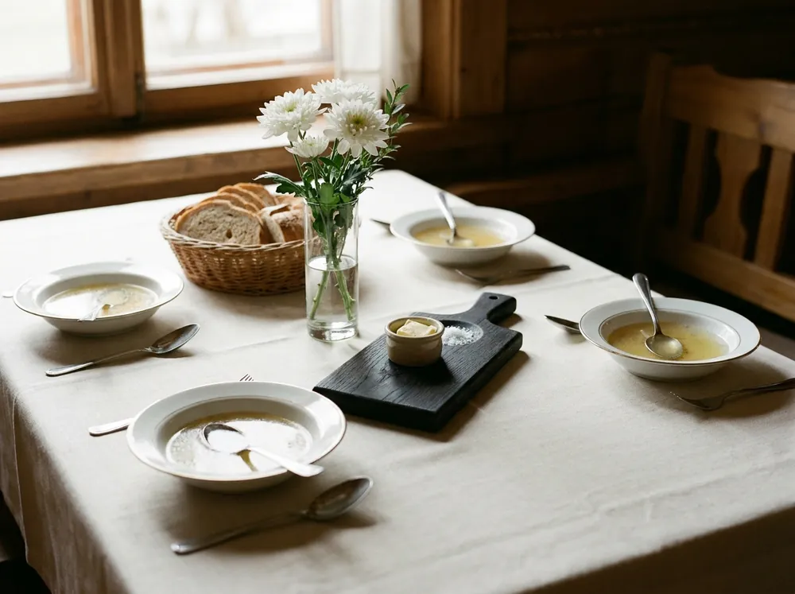
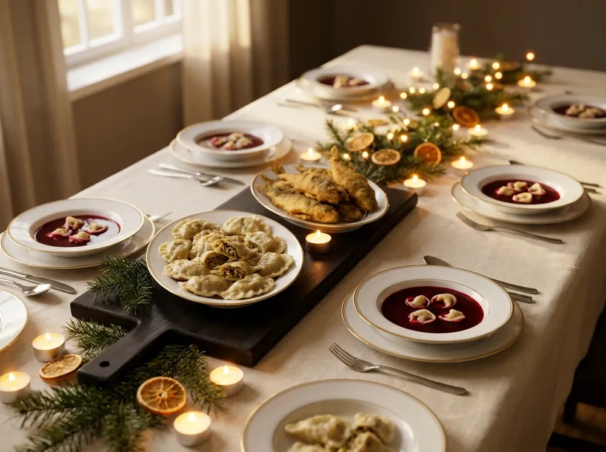

Przyjęcia w Bramie
Komunie, urodziny, przyjęcia po ślubie, stypy i wigilie firmowe. Gotujemy domową kuchnię, nakrywamy salę i obsługujemy gości.

Na jaką okazję?
Wybierz okazję, a formularz na dole strony wypełni się sam.
-

KomuniaRodzinny obiad po uroczystości w kościele. Maj to u nas sezon komunijny, więc termin warto zarezerwować z wyprzedzeniem.Zapytaj o termin -

UrodzinyPrzyjęcie dla rodziny i przyjaciół. Dla najmłodszych mamy kącik zabaw i sztućce dla dzieci.Zapytaj o termin -

Przyjęcie po ślubieObiad dla najbliższych w dniu ślubu, w kameralnym gronie.Zapytaj o termin -

StypaSpokojny obiad po pogrzebie. Wszystko ustalimy w jednej rozmowie telefonicznej.Zapytaj o termin -

Wigilia firmowaŚwiąteczna kolacja dla zespołu w grudniu, przy nakrytym, świątecznym stole.Zapytaj o termin
Jak przygotowujemy przyjęcie
Od telefonu do dnia przyjęcia. Ty jesteś z gośćmi, my podajemy.
Telefon albo zapytanie
Podajesz okazję, datę i przybliżoną liczbę gości. Sprawdzamy, czy termin jest wolny.
Ustalamy menu
Dobieramy dania z naszej kuchni do okazji i liczby gości.
Przygotowujemy salę
Nakrywamy stoły i ustawiamy je tak, jak potrzebujesz.
Dzień przyjęcia
Podajemy na bieżąco, a Ty jesteś z gośćmi.
Co warto wiedzieć
Szczegóły ustalamy indywidualnie. Najczęstsze pytania przed rezerwacją przyjęcia:
- Liczba gości
- [DO UZUPEŁNIENIA: ile osób mieści sala]
- Sala na wyłączność
- [DO UZUPEŁNIENIA: czy przyjęcie zamyka lokal]
- Menu i cena za osobę
- [DO UZUPEŁNIENIA: przykładowe zestawy]
- Tort i dekoracje
- [DO UZUPEŁNIENIA: czy można przynieść własne]
- Zadatek
- [DO UZUPEŁNIENIA: zasady rezerwacji terminu]
Po przyjęciach w Bramie
4,4 / 5 · 779 opinii w Google · 90% poleca na Facebooku
„Organizowałam tam swoje przyjęcie po ślubie. Cała ekipa spisała się na medal, ale szczególnie miło wspominam Panią Agnieszkę.”
Kasia L. · przyjęcie po ślubie · Google
„Z całego serca polecam tę restaurację! Organizowaliśmy tutaj przyjęcie z okazji Pierwszej Komunii Świętej naszego syna […]”
Katarzyna R. · komunia · Facebook
„Serdecznie polecam restaurację Brama, która organizowała nam stypę. Obsługa profesjonalna na wysokim poziomie, jedzenie przepyszne.”
Agnieszka B. · stypa · Google
Zapytaj o wolny termin
Najszybciej przez telefon:
798 101 270albo przez formularz:
- Wypełnij formularzWymagany jest tylko telefon, resztę ustalimy w rozmowie.
- Wyślij gotowy e-mailOtworzy się Twoja poczta z wypełnioną wiadomością. Kliknij „Wyślij”.
- Czekaj na telefonOddzwonimy, sprawdzimy termin i ustalimy menu.